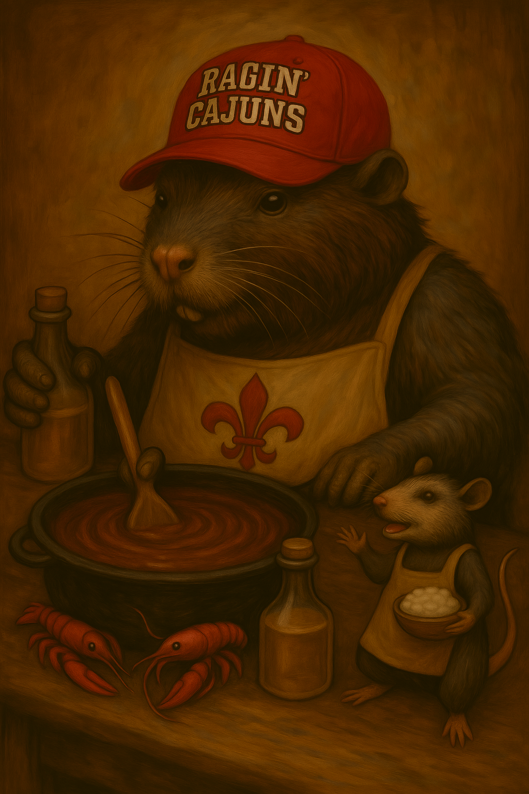

Roux

Ingredients
- Equal parts fat (butter, vegetable or peanut oil) and flour
Directions
- Put fat in a black iron pot or a Dutch oven over medium to medium-high heat. Heat
until very hot. If a pinch of flour sizzles when it is added to the oil, it is ready.
- Add the flour to the oil and stir constantly. This will keep lumps from forming and the flour from sticking to the
pan. If this happens, the flour will scorch, and the mixture will have to be discarded. This is a
labor of love, so be prepared to spend the time required to make it properly.
- As the mixture cooks, it will thicken and darken.
- A light roux will require very little cooking and is used to thicken some cream-based soups and some étouffee dishes.
- A medium roux is usually used to thicken some tomato-based sauces and some casseroles.
- A dark roux is usually the approximate color of brown dress shoes and is very thick. As the mixture approaches this stage,
care should be taken to avoid scorching. A dark roux is used to thicken most South Louisiana gumbos and with onions, celery, bell peppers, garlic, and okra result in the unique flavor that defines gumbo.
Chef's Notes
- The rule is that 2 tbs oil and 2 tbs flour will thicken 1 C of liquid
Michael Fritsche
mbf@fritsche.org